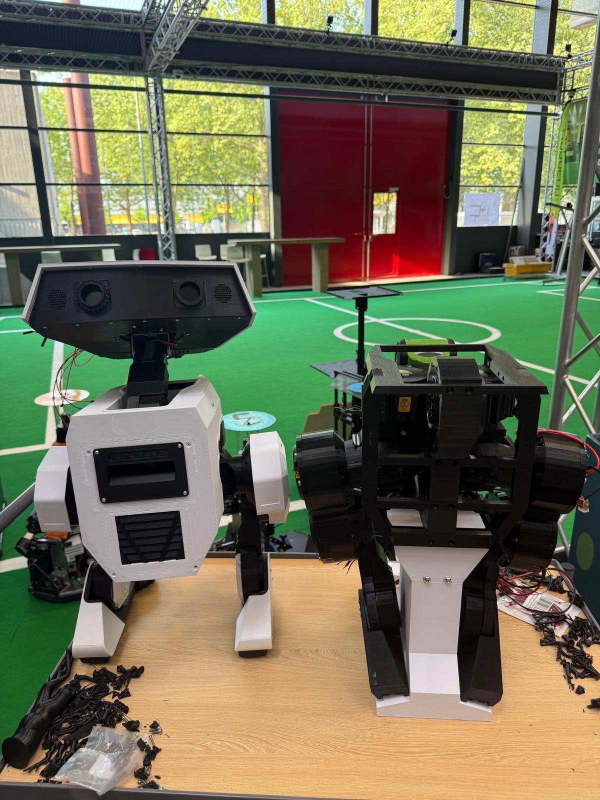

About the Project
After first seeing Disney showcase their BD-X droids, I knew I had to make one myself. I had never built a robot using Reinforcement Learning (RL) before, so I decided to make this my Bachelor End Project (BEP), a 16-week project at TU/e.
I quickly realized there was no clear path for an individual to make a bipedal robot learn to walk with RL and deploy it onto physical hardware. I solved this problem by creating a blueprint that anyone can follow.
The BDX-R (BDX-Robstride) is built using 10 Robstride actuators and is powered by an NVIDIA Jetson Orin Nano. This project was able to train the robot in simulation with NVIDIA's IsaacLab and successfully deploy the policy to the real world. While the head was excluded for locomotion testing, I am currently working on adding it to complete the look.
First Steps
The first time BDX-R ever walked, unedited.
More Footage

Tech Stack Used
Key Features
- Fully Open Source: Anyone can build the robot themselves.
- Off the Shelf Actuators: Utilizes easy to obtain hardware.